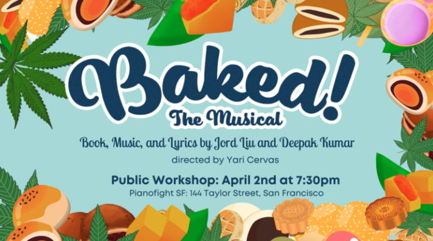
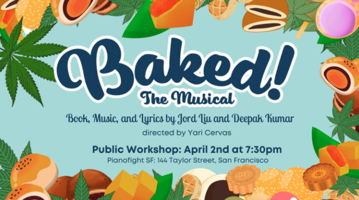
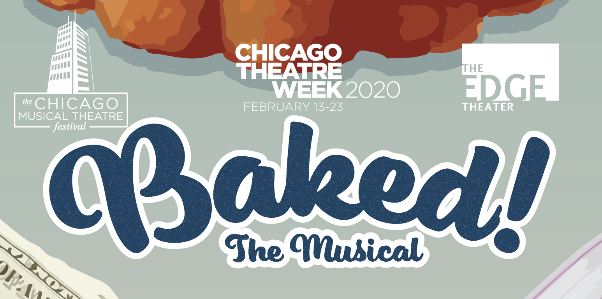

ABOUT THE SHOW
When she doesn’t receive the scholarship that would
send her to her dream school, habitual overachiever
Jane Huang, with the help of her best friend, joins
forces with the class degenerate to build the greatest
drug empire ever run by high schoolers. Kept in the
dark are Jane’s parents, whose inability to cope with
their daughter leaving for college while maintaining a
profit at their struggling Chinese bakery drives them
to pry and potentially unravel Jane’s web of lies.
Baked! The Musical is a reflection on failure,
self worth, and the question of what we owe the people
we love. It features an all Asian American cast, and
the themes are born out of the writers’ own experiences
growing up as the children of immigrants
in the US.
Coming to San Francisco in 2022!
Join our mailing list here
Join our mailing list here
Interested in producing the show? Check out a production packet
here and song demos below.
SAN FRANCISCO 2022
On April 2, 2022, San Francisco's local theatre company FaultLine Theatre is producing a workshop of Baked! The Musical at Pianofight SF. The workshop will be directed by Yari Cervas and features an all Asian cast of local Bay Area actors.

Tickets are now available here. This is a workshop production. A full production is in the works for later in 2022.

Tickets are now available here. This is a workshop production. A full production is in the works for later in 2022.
FEINSTEIN'S / 54 BELOW
In January of 2022, Baked! The Musical was featured at 54 Below in NYC as part of the NYMF Finalist Concert. Watch the video of "Get Baked", featuring Andrew Cristi, Catherine Landeta and Sara States below.
CHICAGO MUSICAL THEATRE FESTIVAL 2020
Baked! The Musical had a full production as a part of CMTF 2020, where we had a sold out run and became the highest grossing show in CMTF history.

"Rife with laughter and crackling with charisma, this
musical burns with fiery grooves and tuneful melodies.
Sleek, charming, and razor-sharp, this raucous journey
of family and friendship from a far-underrepresented
perspective, Baked! is certain to win the ears and
hearts of any and all audiences." – Chicagoland Musical Theatre
"The laid back humor in the dialogue and the emotional
music are the two big strengths of this show. They have all the ingredients
here for a really great little musical about the choices we make and the values
which we hold important." – Times
Square Chronicles
AWARDS
- Best Lyrics
- Best Lead Performer
- Best Supporting Performer
- Best Ensemble
at the Chicago Musical Theatre Festival 2020
- NYMF 2020 Finalist
- RAVE 2020 Finalist